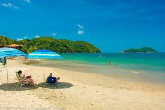
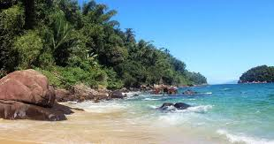

Destinos que representam a diversidade de litorais deslumbrantes pelo mundo.
Aqui utilizaremos blocos de conteúdo, textos, listas, imagens e títulos para organizar a leitura da página de forma clara e semântica
Ubatuba | Brasil
Praia das Toninhas 🏝️
A Praia das Toninhas é separada da Praia Grande por um mirante que vale a parada, tanto pela vista do mar quanto pelas lindas fotos que você pode tirar ali. Geralmente, ela é um pouco mais vazia que a praia vizinha, além de dispor de bons quiosques. Além disso, também é possível curtir passeios de barco e escuna por lá.
Mar de tons de azul-turquesa
Passeios de barcos e mergulhos
Uma ótima opção para famílias
Destaque de phrasing content: Águas cristalinas, Mergulho inesquecível e paisagens preservadas.

Ubatuba | Brasil
Praia do Lázaro 🏝️
Com quase 1,5 km de extensão, a praia do Lázaro é ótima para quem busca uma infraestrutura completa e quer uma praia com mais agito. No lado esquerdo da orla, existem muitos quiosques que agradam os mais animados. Para quem busca calmaria, o lado direito conta com casas de locais e um pouco menos de badalação. Por conta das águas calmas, ela é ideal para crianças.
Mar de tons de azul-turquesa
Passeios de barcos e mergulhos
Uma ótima opção para quem quer sossêgo
Destaque de phrasing content: Águas cristalinas, Mergulho inesquecível e paisagens preservadas.

Ubatuba | Brasil
Praia do Prumirim 🏝️
Existem alguns quiosques na orla da praia, que atendem o público que busca almoçar por ali mesmo. Entretanto, esses locais possuem um preço um pouco mais alto do que os encontrados nas outras praias da cidade.